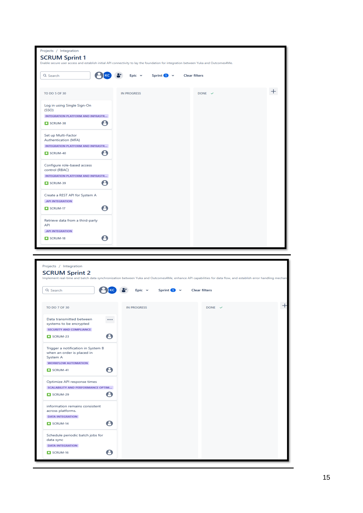
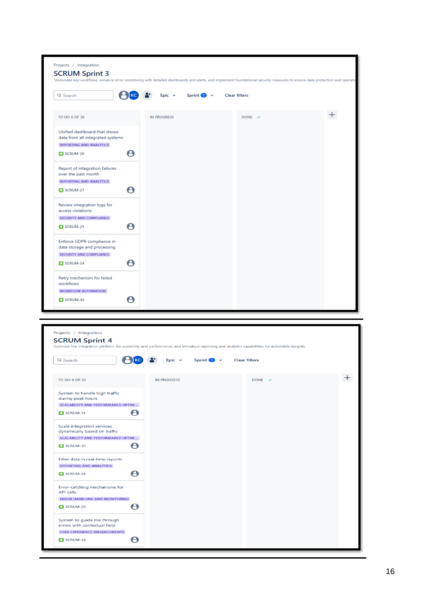
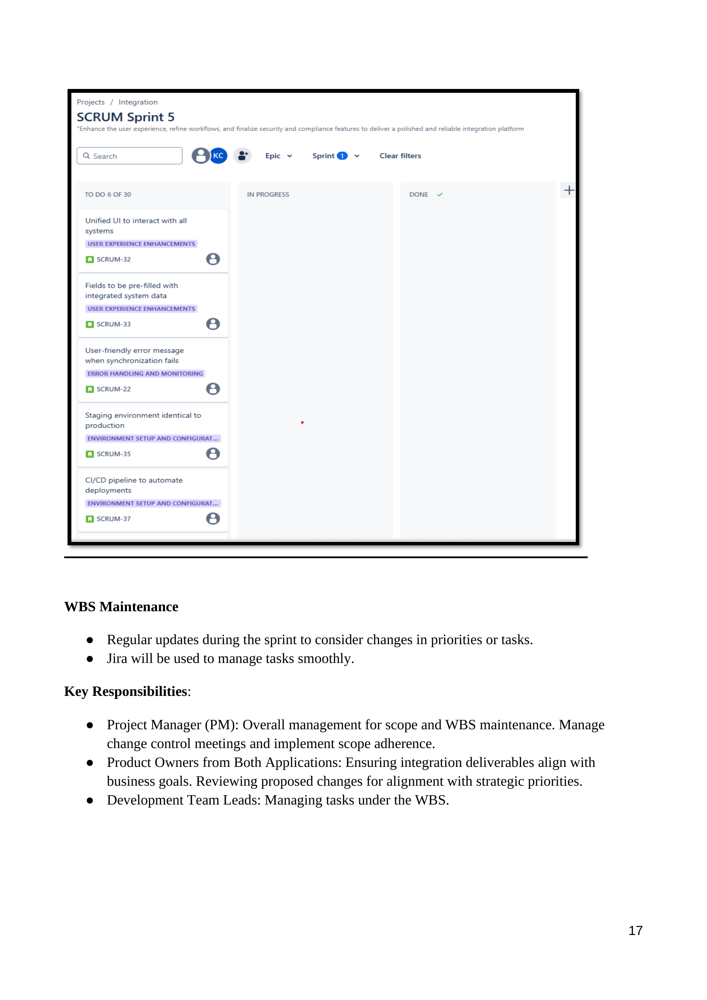
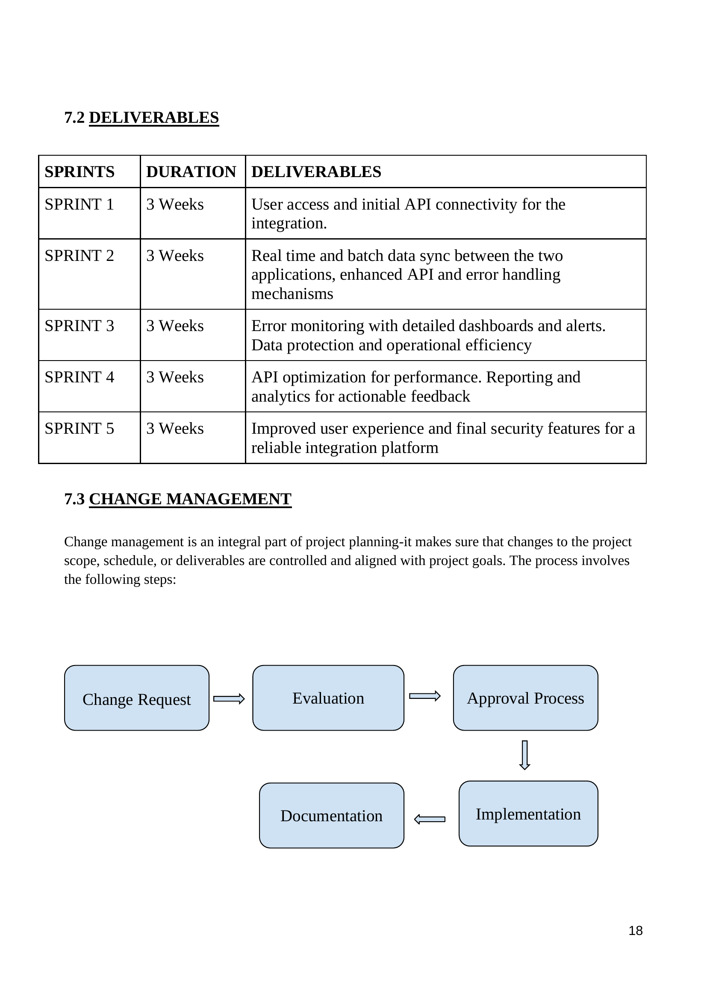

Business Analyst | MSc Business Analytics
I am a Business Analyst with 2 years of experience delivering process improvements and bridging business needs with technical solutions. Skilled in data analysis, UAT, stakeholder engagement, and BI tools with an MSc in Business Analytics at Dublin Business School.
Led a healthcare data integration project as part of MSc coursework. Designed a seamless, secure integration using REST APIs, stakeholder analysis, and KPI evaluation.
Developed Excel dashboards and SQL queries to reduce SLA breaches by 36%. Coordinated UAT, automated reporting workflows, and supported executive decision-making.
Managed project scope, risk, schedule, and stakeholder communications. Produced structured documentation for analysis and implementation.
   